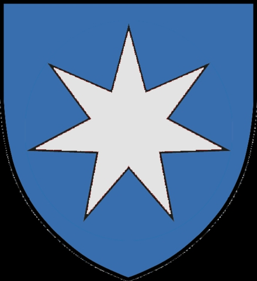

Antavla
24038665 Cecilie Esbernsdatter Hvide av Terløse
Blev minst 78 år.

Far:
Esbern Asserson, Hvide, Snare (1127? - 1204?)
Mor:
Helen Guttormsdatter (1165? - >1230)
Född:
före 1181.
[1]
Död:
1259.
[1]
Barn med
24038664 Anders Grosen Ulfeldt (1170? - >1250)
Barn:
Strange Andersen Ulfeldt (1140? - >1186)
Personhistoria
Årtal
Ålder
Händelse
1127?
Fadern
48077330 Esbern Asserson, Hvide, Snare
föds omkring 1127 Fjenneslev, Sörö, Danmark
[2]
1140?
Sonen
12019332 Strange Andersen Ulfeldt
föds omkring 1140 Danmark
[3]
1165?
Modern
48077331 Helen Guttormsdatter
föds omkring 1165 Sverige
1170?
Partnern
24038664 Anders Grosen Ulfeldt
föds omkring 1170 Kalundborg, Holbäck, Danmark
[2]
1170
Barnbarnet
6009666 Peder Strangesen Ulfeldt till Kalundborg
föds 1170 Kalundborg, Själland, Danmark
<1181
Födelse före 1181
[1]
>1186
Sonen
12019332 Strange Andersen Ulfeldt
dör efter 1186 Danmark
[4]
1204?
Fadern
48077330 Esbern Asserson, Hvide, Snare
dör omkring 1204 Säby gård, Holbeck, Danmark
[2]
>1230
Modern
48077331 Helen Guttormsdatter
dör efter 1230 Vreta kloster (E)
[5]
<1241
Barnbarnet
6009666 Peder Strangesen Ulfeldt till Kalundborg
dör före 1241 Ribe, Danmark
>1250
Partnern
24038664 Anders Grosen Ulfeldt
dör efter 1250 Terlöse, Ribe, Danmark
[2]
1259
Död 1259
[1]
Källor
[1]
Lindevang-lolland
[2]
Anette Guldager Boye
[3]
Flemming Allan Funch
[4]
Skeel, Schaffalitzky og Ahlefeldt
[5]
Dan Conrad